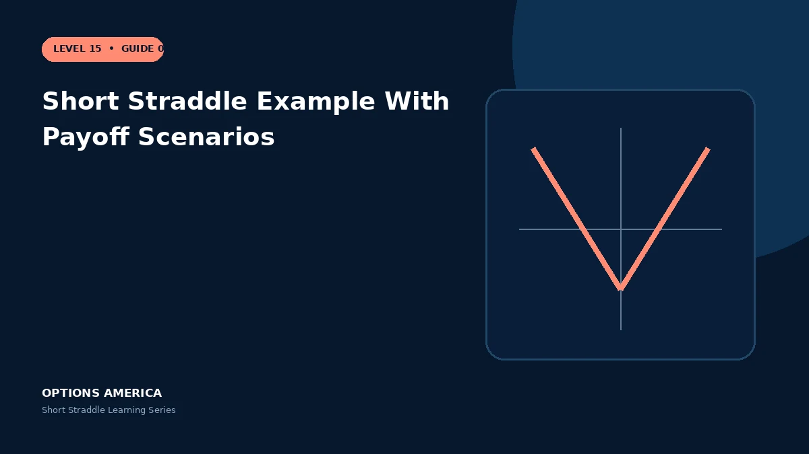

Follow a complete short straddle example across no move, moderate moves, breakevens and a large gap.
Open the position
Stock trades at $100. Sell one 100 call for $5 and one 100 put for $4.50. The total $9.50 credit is $950 per standard straddle.
Near the strike
At $100 both options expire worthless and the full credit remains. At $104 the call has $4 intrinsic value, leaving $5.50 of expiration profit.
At the boundaries
Expiration at $90.50 or $109.50 uses the entire credit to offset intrinsic value. These are the lower and upper breakevens before fees.
Outside the range
At $120, the short call loses $20 while the put expires worthless. Net loss is $10.50 per share, or $1,050, and further upside keeps increasing the loss.
A practical example
Approximate expiration P&L at $85, $95, $100, $105 and $120 is −$550, +$450, +$950, +$450 and −$1,050 before transaction costs.
This simplified scenario focuses on expiration outcomes; live prices and risks will differ. Live option prices also reflect the underlying price, time decay, rates, dividends, liquidity and transaction costs. Greeks are theoretical estimates, not guarantees.
Build a risk-first trading plan
Before using short straddle example with payoff scenarios, record the underlying price, strike, expiration, total credit and contract multiplier. Calculate both expiration breakevens, then model losses beyond them rather than stopping at the profitable range. The maximum credit is visible at entry, but the largest future loss is not.
Stress at least five underlying prices, a volatility increase and decrease, and several dates. Include a gap that cannot be adjusted intraday. Review delta, gamma, theta and vega at the position and portfolio level because several neutral premium trades can become directional together.
Define a profit target, maximum tolerated loss, margin reserve, event rule and latest exit date. Use a single multi-leg order where possible and verify both legs after every fill or adjustment. This process does not eliminate risk, but it makes the decision measurable and repeatable.
After the trade, record actual movement, volatility change, slippage and the largest directional exposure. Comparing those results with the original forecast helps separate sound execution from a lucky outcome and improves future duration, strike and position-size decisions.
Frequently asked questions
Why is $100 best?
Both options expire worthless at their shared strike.
Does the losing option use all premium?
It is offset by the combined credit from both legs.
Can the trade be closed early?
Yes, with a two-leg order.
Continue the Short Straddle cluster
Explore related guides: Short Straddle vs Long Straddle · Implied Volatility and the Short Straddle · How to Adjust a Short Straddle. For a structured sequence, use the free Level 15 – Short Straddle course.
Options involve risk and are not suitable for every investor. This material is educational and is not investment, tax or legal advice. Greeks are theoretical estimates, and contract terms and broker requirements can vary.